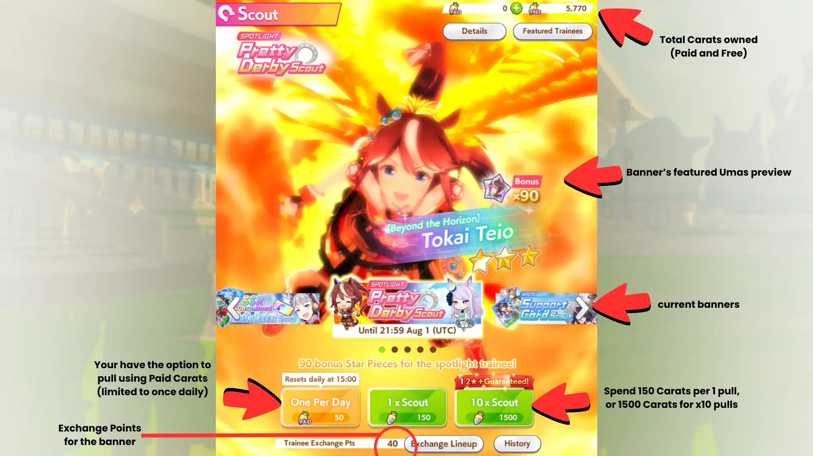
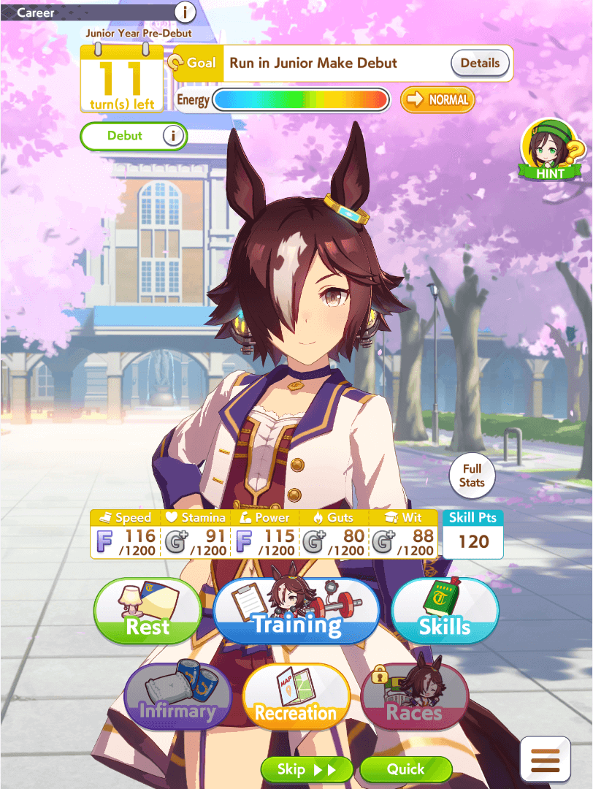
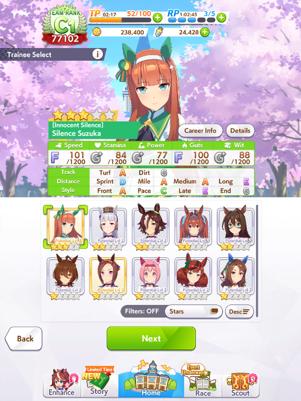
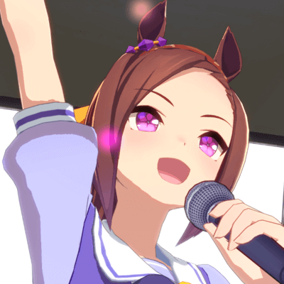
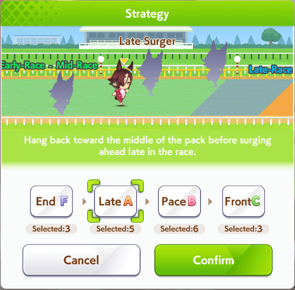
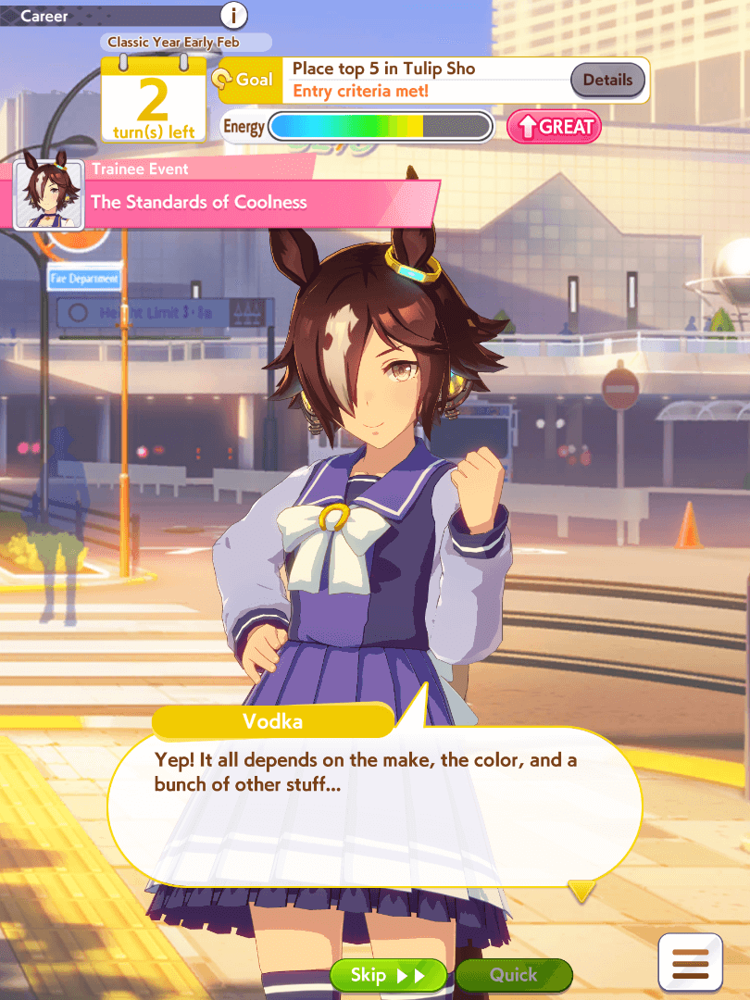
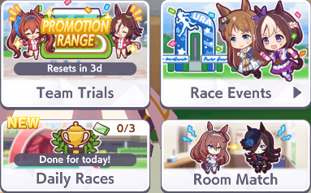
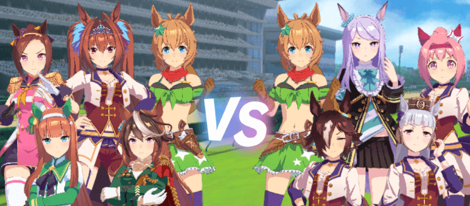

Uma Musume Guide For Absolute Beginners
Maybe you’ve decided to check out the Uma Musume game after hearing about its success, or maybe you became interested in it after you’ve heard your friends talking about it. Or maybe you just liked the anime.
Whatever is the case, this guide will tell you everything you need to know about the very basics of the game.
This guide was created when only the Japanese server existed and explains the fundamentals to non-Japanese speakers, which means it can be very detailed at times. If you’re playing on the Global server, you may also want to check out a Global quickstart guide, but this article still covers all essential concepts.
What is Uma Musume?

Uma Musume: Pretty Derby is an online gacha game with rogue-lite elements centered around horse racing. Instead of actual horses, you train and race anthropomorphized horsegirls known as uma musume.
When you obtain a character, you cannot immediately use her in PvP or daily content. You must first complete a Career, where you raise her stats, acquire skills, and clear race objectives. The resulting trained version is saved as a Veteran, which can then be used in other modes.
Career mode is the core of the game and offers a unique raising-sim experience that sets Uma Musume apart from most mobile gachas.
Is there a stamina system?
The game does feature stamina, but it is very forgiving. A full bar allows multiple Career runs, each lasting 20–40 minutes. Stamina refills quickly and can be recharged cheaply with premium currency.
Because of this, Uma Musume works well as both a main game and a casual side game.
Gacha
Uma Musume uses a gacha (Scout) system with two main banners: Trainee (character) banners and Support Card banners. While pulling for favorite characters is tempting, support cards are essential for strong training runs.
The game includes a pity system known as sparking: after 200 pulls on a banner, you can directly exchange for the featured character or card.
Career Mode
Career Mode is the heart of Uma Musume. Each run consists of around 70 turns where you manage training, races, and events to build the strongest possible version of your character.
Starting a Career
You begin by selecting a horsegirl, Legacies (parent characters from previous runs), and six support cards. Beginners are often recommended to start with Sakura Bakushin O due to her simple goals and forgiving playstyle.
Turns
The management part of the game is turn-based. Every run is divided into around 70 turns, and you have several options on how to spend them.
Resting will recharge your energy by 30, 50, or 70 points (it’s random, but 50 is the most common outcome). Most of the other options will consume energy, so this is where you can get it back.
The Infirmary option will only be available when you’re affected by a negative status effect, giving you a high chance at healing it. Status effects can be obtained from several sources, most commonly from random training events. The rest of the options are more complex, so we will have a more in-depth look at them.
Raising Stats
- Speed – Maximum running speed
- Stamina – How long the character can maintain speed
- Power – Acceleration and uphill performance
- Guts – Reduces stamina consumption
- Wit – Skill activation rate and consistency
Skills

Skills are special abilities that your horsegirl can use during a race. There are hundreds of different skills - you can view all of them in the
Going Out
Going out improves your character’s mood, which boosts training efficiency and race performance. Outings may also restore energy or remove negative status effects.
Racing

Races are fully automated but highly engaging to watch. You can choose a running strategy such as Front Runner or End Closer, depending on your character’s strengths.
There are four strategies in total - from left to right, called End Closer, Late Surger, Pace Chaser, and Front Runner. You should always use a strategy your character is good at, unless you know what you’re doing. End Closers stay in the back of the pack and pushes for victory in the final phase. Late Surgers are similar but doesn’t stay as far back. Pace Chasers try to stay even further ahead and "lead" the main pack. Front Runners always push for first place and try to win by getting a big lead on everyone else early.
Career Goals
Each character has mandatory goals that must be cleared to continue the Career. Failing a goal immediately ends the run.
Career Events
Events appear frequently and often present dialogue choices that affect stats or skills. These story segments give insight into characters and add variety to each run.
Other Game Modes
Daily Races
Daily races provide money and support upgrade materials. You can run them three times per day and should always attempt the highest difficulty you can clear.
Legend Races
Limited-time races against powerful opponents. These reward character star pieces used for permanently increasing rarity.
Team Trials (PvP)
Team Trials is a relaxed PvP mode consisting of five races across different distances. Rankings are based on your best weekly score, making it accessible even for casual players.
Conclusion
Uma Musume may seem complex at first, but its systems quickly become intuitive with experience. The combination of training, strategy, and racing makes it a uniquely satisfying game.
Start training a character you like, make mistakes, enjoy the races, and before long, you’ll feel right at home as a trainer.